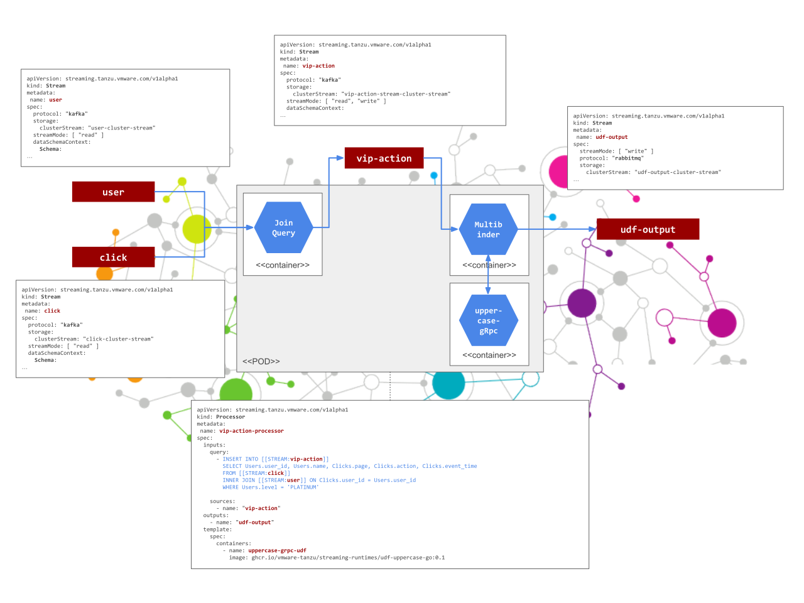

Clickstream Analysis
Clickstream Analysis
The Streaming ETL is a common place for many people to begin first when they start exploring the streaming data processing. With the streaming ETL we get some kind of data events coming into the streaming pipeline, and we want intelligent analysis to go out the other end.
Let's just say clickstream data is coming in, and we want to know who are our high status customers who are currently using the website
so that we can engage with them or to find how much they buy or how long they stay on the site that day.
Clickstreamdata is the pathway that a user takes through their online journey. For a single website it generally shows how the user progressed from search to purchase. The clickstream links together the actions a single user has taken within a single session. This means identifying where a search, click or purchase was performed within a single session.
Let say that our streaming ETL, receives two input streams of data:
the Users stream - containing detailed information about the registered users:
{"user_id":"407-41-3862","name":"Olympia Koss","level":"SILVER"}
{"user_id":"066-68-4140","name":"Dr. Leah Daniel","level":"GOLD"}
{"user_id":"722-61-1415","name":"Steven Moore","level":"GOLD"}
{"user_id":"053-26-9971","name":"Karine Boyle","level":"SILVER"}
{"user_id":"795-35-5070","name":"Dr. Akiko Hoppe","level":"PLATINUM"}
{"user_id":"164-85-7495","name":"Kassie Homenick","level":"SILVER"}
...
and the Clicks - the stream of click events:
{"user_id":"170-65-1094","page":5535,"action":"selection","device":"computer","agent":"Mozilla/5.0 (Windows NT 10.0; WOW64) AppleWebKit/537.36 (KHTML, like Gecko) Chrome/56.0.2924.87 Safari/537.36 OPR/43.0.2442.991"}
{"user_id":"804-31-3496","page":30883,"action":"checkout","device":"tablet","agent":"Mozilla/4.0 (compatible; MSIE 7.0; Windows NT 6.0)"}
{"user_id":"011-54-8948","page":18877,"action":"products","device":"mobile","agent":"Mozilla/5.0 (iPhone; CPU iPhone OS 11_4_1 like Mac OS X) AppleWebKit/605.1.15 (KHTML, like Gecko) Version/11.0 Mobile/15E148 Safari/604.1"}
{"user_id":"854-27-6546","page":64282,"action":"selection","device":"mobile","agent":"Mozilla/5.0 (Windows NT 10.0; WOW64; rv:50.0) Gecko/20100101 Firefox/50.0"}
{"user_id":"719-81-5311","page":54344,"action":"product_detail","device":"mobile","agent":"Mozilla/5.0 (Windows NT 5.1; rv:7.0.1) Gecko/20100101 Firefox/7.0.1"}
{"user_id":"263-22-2309","page":28687,"action":"products","device":"mobile","agent":"Mozilla/5.0 (iPhone; CPU iPhone OS 12_0_1 like Mac OS X) AppleWebKit/605.1.15 (KHTML, like Gecko) Version/12.0 Mobile/15E148 Safari/604.1"}
Note the JSON format is optional. For real scenarios Apache Avro is most likely to be used
Then we can define a streaming query that continuously analyses the two input streams and produces a new stream containing only enriched information for the Platinum level users.
1. INSERT INTO VipActions
2. SELECT
3. Users.user_id, Users.name, Clicks.page, Clicks.action, Clicks.event_time
4. FROM
5. Clicks
6. INNER JOIN
7. Users ON Clicks.user_id = Users.user_id
8. WHERE
9. Users.level = 'PLATINUM'
The first line (1) creates a new VIP Actions stream and a new Kafka topic.
The query is going to run and never stop until we kill it.
The new stream is created as an ordinary SQL select (2) from a stream called Clicks (5) joined to a stream called Users (6-7).
Since the Clicks and Users streams have both a user_id we can join them to get a new stream that's the clickstream data enriched with the user data.
We are only interested in platinum-level users. This the user-level information is not available in the Clicks stream, but as we were able to join to the Users stream now we can filter based on the Users data (8-9).
Following diagram illustrates the implementation flow and involved resources: 
Quick start
-
Follow the Streaming Runtime Install instructions to instal the operator.
-
Install the Clickstream pipeline:
-
Install the click-stream random data stream:
kubectl apply -f 'https://raw.githubusercontent.com/vmware-tanzu/streaming-runtimes/main/streaming-runtime-samples/clickstream/data-generator.yaml' -n default
-
Follow the explore Kafka and explore Rabbit to see what data is generated and how it is processed though the pipeline.
-
Delete the Top-k songs pipeline and the demo song generator: